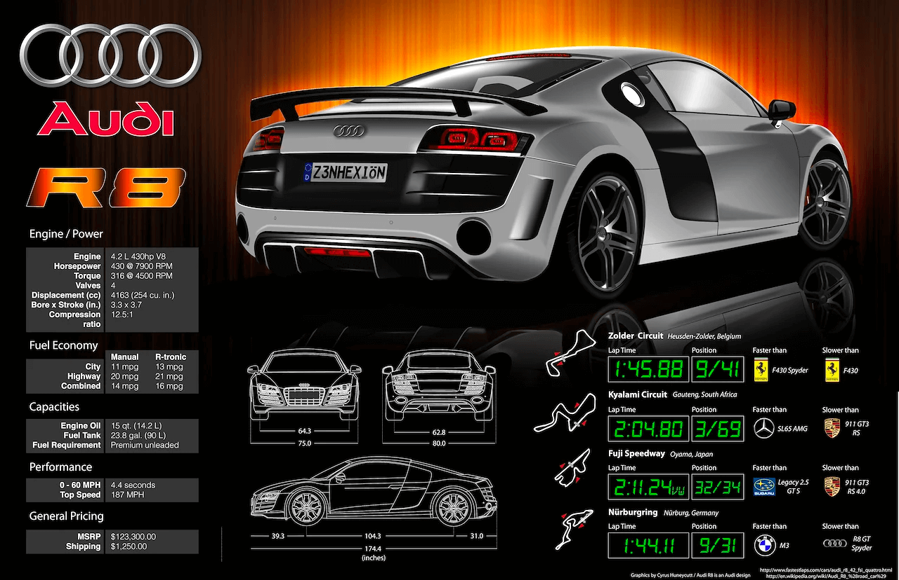
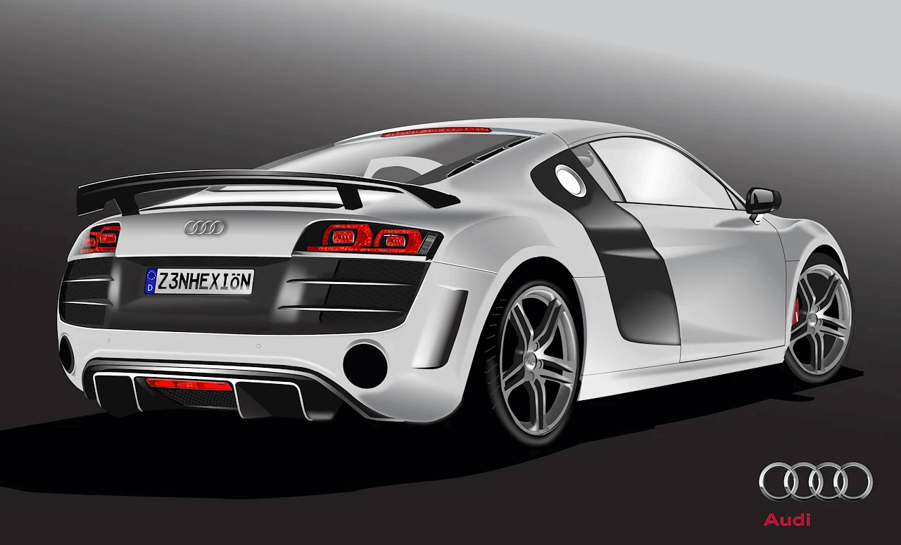

Infographic design
Adobe Illustrator
An infographic is my favorite way to capture information and tell a compelling visual story. I have created infographics on a variety of topics and for a variety of purposes, each within the context of its own brand or that of another organization. Below are selected favorites from throughout my career.
Benefits of a Bilingual Brain
My most popular and widely shared piece of work is an infographic called Benefits of a Bilingual Brain. I produced this infographic for VIF International Education's Splash program to promote bilingualism and dual language education in schools across the world.

Research and design
I researched bilingualism in a number of scholarly papers to verify what kind of benefits were quantifiable and suitable for representation. I studied existing diagrams on regions of the brain to create an accessible design for viewers to visually connect research with established science.
When the company rebranded, I refined the infographic's design and worked with Spanish speakers on staff to produce an accompanying Spanish language version.


Audi R8 infographic
I took a course on infographics that gave me a foundation in Illustrator and vector graphics. My vector recreation of the Audi R8 remains the highest testament to what I can achieve with a pen tool and gradients on an artboard.
The centerpiece of the graphic, a showroom view of the 2012 Audi R8, took me almost 15 hours of work producing vector components and color gradients. I traced a photograph and sampled its colors to produce line art for each section of the vehicle, moving up from the chassis into finer details.
Heavy Skies
I worked as an associate designer for UNC's award-winning PoweringANation multimedia journalism project, 100 Gallons, producing supplementary design assets and infographics for the online experience.
"Heavy Skies" explores the weight of water and the gravity of its motion through the water cycle throughout the planet.
Cockfighting: History of a Blood Sport
I worked with another multimedia project at UNC, Living Galapagos, a series of stories from journalism students who studied abroad on the islands and brought their experiences together into a snapshot of Galapagos culture.
I created an infographic about cockfighting on the islands, using data from the students' journey to provide a look at the blood sport and its tradition on the islands. Instead of relying too heavily on potentially sensitive photographs, I illustrated my own bird for the centerpiece and built the infographic around it.
Kicking4Hunger
I volunteered to create an infographic of data from a colleague's non-profit foundation, Kicking4Hunger. I used his brand colors and data to create an overview of his organization. Kicking4Hunger accepts canned food as a fee for entry into soccer summer camps for kids across the country.